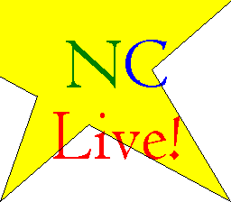

|  |
I am sorry to say that due to the lack of interest from fans and myself, NC Live will be indefinately canceled. There just hasn't been the support that is needed to complete a project this big. If interest and support picks up again, then a future NC Live is definately a possibility. But right now, we will have to put it on hold. |
|
Mario: Swordblade2k Dr. Donez - Rayman FREAK Fred - Jim Nickabocker Bill - Luigi (Nickname) Exec - Jared Luigi - Curt Kirby - Linkfan088 Please send me an e-mail if you are listed. I don't have anyone's e-mail, so you better do it soon or else we'll give your part away. After every part is accounted for, we'll start to get all of the lines together and finish up NC Live. Thanks to everyone who took part in the auditions. The following characters have parts in the Back to School Character. The line following the character is the line that you have to record into a .WAV file to audition for the character. Fred - "That's it! Kirby is going down!" Bill - "Can I go to the bathroom?" Mario - "It's-a-me? Mario?" Luigi - "I wish I had a line." Kirby - "Zzz." (Your best Kirby snore) Prof. Executrain - "Who dares to interrupt my class!?" Dr. Donez - "It is I, Dr. Donez!" (Note - Try to pronounce "Executrain" like the words "Executive" and "Train". It should sound like "Exec" - "u" - "train". Also, try to pronouce "Donez" like "Doh" - "nez".) To audition for a part, please send me an e-mail to me, Jay Resop, with a .WAV file inculding one line for each Characters you want to audition for. For example, if you want to audition for Fred. send a .WAV file with the line "That's it! Kirby is going down!" in the best Fred voice you can come up with. You can audition for multiple characters. To make it fair, do not include your name in the .WAV file. Simply say the character you are going to audition for followed by the line. Include the name you want to go by for NC Live in your e-mail. OK, I extended the deadline for the NC Live! auditions. It will now be April 23th, 2003. Just to give you all a little more time in case you want to send in a last minute audition. One final note. Since there may be more people auditioning then parts, please realize that you may not get a part. I'm going to be choosing parts primarily on how well I think the person portrays the character in question. Nothing else. You can always try again for NC Live! 2. |
|
Go back to NC |